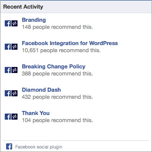

The Facebook Activity Feed displays the most interesting, recent activity taking place on your site, using actions (such as likes) by your friends and other people.
You can integrate the Facebook Activity Feed on your site. This is a social plugin, so users do NOT have to have synced accounts for their activity to show on your site. They just need to be logged into Facebook to see activity from their friends.
{exp:fbc:activity_feed}

Parameters
The following parameters are available for use:
width=
width="500"
This parameter allows you to set the width (in pixels) of the Activity Feed box. Default is 300.
height=
height="600"
This parameter allows you to set the height (in pixels) of the Activity Feed box. Default is 300.
header=
header="false"
This parameter allows you to show or hide the title header for the Activity Feed box. Default is true - use false to hide it.
colorscheme=
colorscheme="dark"
This parameter allows you to control the color scheme of the Activity Feed box with predetermined Facebook options. Options are light or dark.
recommendations=
recommendations="true"
This parameter allows you to specify whether to always show recommendations in the plugin. If recommendations is set to true, the plugin will display recommendations in the bottom half. Default is true - set to false to disable.
Examples
Below is some example code on how to display the Facebook Activity Feed on your site:
<h3>Recent Site Activity</h3>
{exp:fbc:activity
width="300"
height="300"
header="true"
recommendations="true"
}